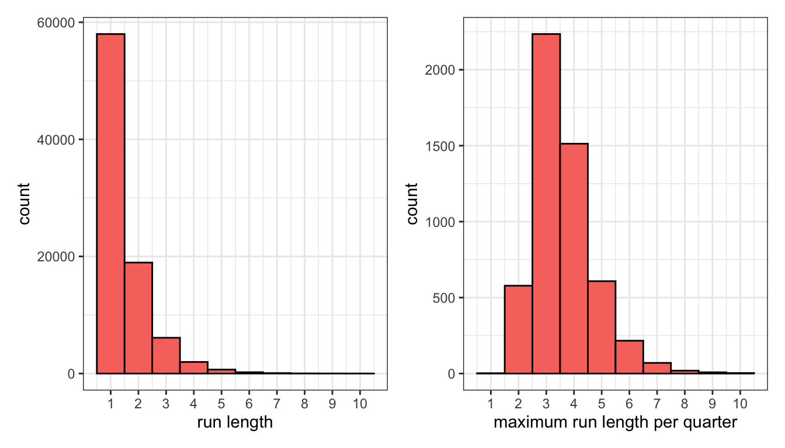
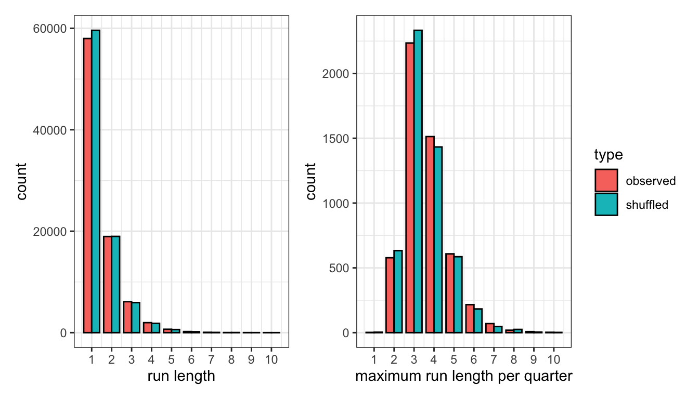

“It’s a game of runs. We withstood theirs,” said Miami Heat star Jimmy Butler after a key postseason win in late April. Two weeks later in New York, before another pivotal game, Butler again explained that “this is a game of runs for both sides,” and later his opponent Jalen Brunson chimed in that “it’s a game of runs, things are gonna happen that aren’t gonna go your way.” A hundred miles south down I-95, Philadelphia 76ers coach Doc Rivers recited the same phrase: “It’s going to be a game of runs. We’ve got to sustain their runs,” he said after his team’s win.
These “runs,” of course, are the short but influential stretches of nearly every game during which one team heavily outscores the other. It’s a succinct way to describe the fan experience, as these intervals and their impact on the ultimate outcome are usually our most vivid memories. And it’s also become somewhat of a narrative crutch during podium post-mortems for players and coaches who can attribute results to the nature of the sport – perhaps the game wouldn’t have slipped through their fingers if it wasn’t so darn runny.
But it also feels like calling basketball a game of runs over and over again implies that points are exchanged between teams in sequences that are streakier or more volatile than baseline scoring rates would otherwise dictate. In other words, characterizing the sport as runny seems equivalent to believing in the existence of momentum and the idea that scoring the most recent basket increases your probability of scoring the next one. So: does NBA basketball feature more runs than you would expect from two teams with hundreds of alternating opportunities to score every game?
Let us examine the 1300 games from the 2021-2022 NBA season using play-by-play data hosted on Kaggle. We define a possession for a team as any continuous time period with the ball (so offensive rebounds extend possessions as opposed to incrementing them), and a successful possession as scoring any number of points in that timeframe, whether that be a single free throw or a four-point play. We can then tally how many uninterrupted scoring possessions teams can achieve before their opponent logs a bucket for themselves, and turn any game into a series of back-and-forth runs that are each at least one score in length. Note that we reset the count at the end of each quarter.
For example, consider the sequence below from last year’s conference finals between the Heat (MIA) and the Celtics (BOS). After Tyler Herro made a jumper for the Heat, the Celtics score two unanswered baskets before the Heat come right back with consecutive unanswered baskets of their own, leading to run lengths of 1, 2, and 2, respectively.
| offense | defense | time | play | score |
|---|---|---|---|---|---|
| MIA | BOS | 3:59 | T. Herro makes 2-pt jump shot from 20 ft | 43-51 |
| BOS | MIA | 3:37 | J. Tatum makes 2-pt jump shot from 13 ft | 43-53 |
MIA | BOS | 3:17 | C. Martin misses 3-pt jump shot from 26 ft | 43-53 | |
BOS | MIA | 3:14 | D. Theis makes 2-pt dunk from 1 ft (assist by P. Pritchard) | 43-55 | |
| MIA | BOS | 2:43 | C. Martin makes 3-pt jump shot from 25 ft (assist by B. Adebayo) | 46-55 |
BOS | MIA | 2:16 | P. Pritchard misses 2-pt jump shot from 15 ft | 46-55 | |
MIA | BOS | 2:12 | T. Herro makes 2-pt jump shot from 7 ft | 48-55 |
If we gather all of these run-lengths from an entire season, we can see which ones are most common. As the histogram on the left below demonstrates, most runs are just a single scoring possession that is eventually answered by the other team. After that, about one third of existing runs are extended an extra scoring possession at each step. On the right, if we calculate the longest run within each individual quarter, we find the most typical values to be three or four unanswered baskets.

How can we test whether these runs are self-sustaining? Well if each possession really did depend on who scored last, then we wouldn’t be able to reproduce the distributions above without that necessary context. On the other hand, if we can create similar results with a process that eliminates any dependencies between observations, then there’s no reason to believe these runs are a product of momentum.
One way to do this is to simply scramble the results of each team’s possessions. If we completely randomize the order of the play column above while keeping everything else intact, we will preserve the length and team scoring rates of each game but destroy any existing relationship between adjacent rows. This approach is known as a permutation test, and it’s used to ascertain whether data is “exchangeable,” meaning any arrangement of observations is equally likely.
For example, shuffling the order of possession results in the table above yields the following sequence, which now is composed entirely of single-basket runs:
| offense | defense | time | play | score |
|---|---|---|---|---|---|
| MIA | BOS | 3:59 | C. Martin makes 3-pt jump shot from 25 ft (assist by B. Adebayo) | 44-51 |
| BOS | MIA | 3:37 | D. Theis makes 2-pt dunk from 1 ft (assist by P. Pritchard) | 44-53 |
| MIA | BOS | 3:17 | T. Herro makes 2-pt jump shot from 20 ft | 46-53 |
| BOS | MIA | 3:14 | J. Tatum makes 2-pt jump shot from 13 ft | 46-55 |
MIA | BOS | 2:43 | C. Martin misses 3-pt jump shot from 26 ft | 46-55 | |
BOS | MIA | 2:16 | P. Pritchard misses 2-pt jump shot from 15 ft | 46-55 | |
| MIA | BOS | 2:12 | T. Herro makes 2-pt jump shot from 7 ft | 48-55 |
Do this for the entire dataset and you can re-calculate how often runs of every length occur and what a typical longest run per quarter looks like. The results are distributions that look very similar to those based on the actual results. The average run length in the shuffled data is 1.46 compared to 1.48 in the real data, and the average maximum run per quarter is 3.55 in the shuffled data compared to 3.62 in the real data.

If randomizing the possessions creates nearly the same incidence of a single team stacking up consecutive baskets, then we’re left with little reason to believe that NBA basketball is any runnier than you’d expect from a game with so many scoring opportunities, matching the conclusion from a 2019 paper with similar methodology.
Given that the existence of momentum is difficult to prove, perhaps we should stop faulting teams for not being able to claim it exclusively for themselves. In particular, it’s popular to criticize coaches for failing to call a timeout in the middle an opponent’s run. Fans and media alike recently piled on Celtics coach Joe Mazzulla for not intervening more often during his team’s worst stretches in their playoff losses to Butler’s Heat.

But if we examine when timeouts were used during opponents’ runs in the dataset, we find that they do little to change the events that immediately follow. For each minimum length of unanswered scoring possessions, we split runs into those that featured an opponent’s timeout at that juncture and those that didn’t. For example, for every run that lasted at least three scores, we can note if a timeout was called after the third score and compare the remainder of those runs. The table below shows that runs continue at approximately the same length, regardless of whether a timeout was used.
initial run length | timeout called | n | average remaining run |
|---|---|---|---|
1 | no | 61,991 | 0.53 |
yes | 1,492 | 0.53 | |
2 | no | 19,322 | 0.53 |
yes | 2,101 | 0.54 | |
3 | no | 5,498 | 0.54 |
yes | 1,154 | 0.58 | |
4 | no | 1,460 | 0.57 |
yes | 453 | 0.54 | |
5 | no | 415 | 0.59 |
yes | 114 | 0.51 | |
6 | no | 111 | 0.56 |
yes | 44 | 0.59 |
It should be noted that this type of analysis falls far short of the requirements for a causal experiment, as coaches do not randomly use timeouts but rather must assess whether their team’s current plight is worth burning one from their limited supply. However, more rigorous studies reached the same conclusion, and in a broader sense the experimentation above is quite similar to the many investigations into the existence of a “hot hand” across various sports, most of which attribute such phenomena to pure randomness.
Those studies usually lose their influence somewhere between the classroom and the locker room, which is why we’ll probably continue hearing NBA players proclaim that their sport is a game of runs when prompted to recap their team’s performance. Just once though it’d be nice for one of them whisper under his breath, “…due to random variation.”
All code used for the analysis is below.
Code
library(tidyverse)
library(lubridate)
library(patchwork)
getmode <- function(x) {
uniqx <- unique(x)
uniqx[which.max(tabulate(match(x, uniqx)))]
}
# unzipped from https://www.kaggle.com/datasets/xocelyk/nba-pbp
pbp_raw <- read_csv("/Users/walkerharrison/Downloads/all_games.csv")
# turning play-by-play data into possessions
pbp <- pbp_raw %>%
mutate(date = as_date(Date, format = "%m/%d/%Y")) %>%
mutate(month = month(date),
day = day(date),
year = year(date)) %>%
# drill down to single NBA season
filter((year == 2021 & month >= 9) | (year == 2022 & month <=8)) %>%
# convert game clock display to seconds remaining
mutate(qtr_seconds_remaining = lubridate::hour(Time)*60 + lubridate::minute(Time)) %>%
filter(is.na(AwayEvent) | is.na(HomeEvent)) %>%
# remove non-action events
filter(!str_detect(coalesce(AwayEvent, HomeEvent, ""), "enters the game")) %>%
filter(!str_detect(coalesce(AwayEvent, HomeEvent, ""), "Instant Replay")) %>%
filter(!str_detect(coalesce(AwayEvent, HomeEvent, ""), "kicked ball")) %>%
# note upcoming timeouts before removing them
mutate(home_timeout_after = str_detect(coalesce(lead(HomeEvent), ""), "timeout"),
away_timeout_after = str_detect(coalesce(lead(AwayEvent), ""), "timeout")) %>%
filter(!str_detect(coalesce(AwayEvent, HomeEvent, ""), "timeout")) %>%
# data formatted so that events attributed to possessing team
mutate(possession = ifelse(!is.na(AwayEvent), AwayName, HomeName)) %>%
group_by(GameID, Possession) %>%
# strips out occasional odd possession changes (loose balls?)
mutate(possession = getmode(possession)) %>%
group_by(GameID) %>%
# trick for assigning key column to clusters of data
mutate(possession_id = 1 + cumsum(possession != lag(possession, default = first(possession)))) %>%
group_by(date, game = GameID, period = Period, home = HomeName, away = AwayName, possession_id, possession) %>%
# summary info for each possessions
summarize(start = min(qtr_seconds_remaining),
end = max(qtr_seconds_remaining),
end_home_score = max(HomeScore),
end_away_score = max(AwayScore),
# mark timeout if following end of possession
home_timeout_after = last(home_timeout_after) == 1,
away_timeout_after = last(away_timeout_after) == 1,
last_event = last(coalesce(AwayEvent, HomeEvent))) %>%
group_by(game) %>%
# keep track of score
mutate(score = ifelse(possession == home, end_home_score > lag(end_home_score, default = 0),
end_away_score > lag(end_away_score, default = 0)),
last_score = ifelse(score, possession, NA)) %>%
# keep track of who scored last
fill(last_score, .direction = "down") %>%
mutate(last_score = lag(last_score)) %>%
ungroup() %>%
# team identities required for matchup modeling
mutate(home_poss = possession == home,
offense = ifelse(home_poss, home, away),
defense = ifelse(home_poss, away, home),
# treat every quarter as a distinct game
gp = paste0(game, period))
rm(pbp_raw)
# mapping possessions to runs
runs <- pbp %>%
# once for games
group_by(game, score) %>%
# trick for assigning key column to clusters of data
mutate(run_id = 1 + cumsum(offense != lag(offense, default = first(offense)))) %>%
# once for game-periods
group_by(gp, score) %>%
# trick for assigning key column to clusters of data
mutate(run_id_gp = 1 + cumsum(offense != lag(offense, default = first(offense)))) %>%
ungroup()
# aggregate possession info over runs (game)
runs_agg <- runs %>%
group_by(game, score, offense, defense, home_poss, run_id) %>%
summarize(length = n(),
# determine when first (if any) opponent timeout was used during run
timeout = min(c(Inf, which(ifelse(home_poss, away_timeout_after, home_timeout_after)))),
start_period = min(period),
# determine if run spans across multiple quarters
period_change = min(c(Inf, which(lead(period) != period)))) %>%
ungroup()
# aggregate possession info over runs (game-period)
runs_agg_gp <- runs %>%
group_by(gp, score, offense, defense, home_poss, run_id_gp) %>%
summarize(length = n(),
# determine when first (if any) opponent timeout was used during run
timeout = min(c(Inf, which(ifelse(home_poss, away_timeout_after, home_timeout_after)))),
start_period = min(period),
# determine if run spans across multiple quarters
period_change = min(c(Inf, which(lead(period) != period)))) %>%
ungroup()
# example of run calculation
run_ex_table <- runs %>%
filter(gp == "202205170MIA2") %>%
left_join(runs_agg_gp %>% filter(score)) %>%
mutate(run_id = run_id_gp) %>%
filter((run_id %in% 14:16 & score) | (run_id %in% 11:12 & !score)) %>%
# get rid of non-scoring ids and fill down
mutate(run_id = ifelse(score, run_id, NA)) %>%
fill(run_id, .direction = "down") %>%
fill(run_id, .direction = "up") %>%
transmute(run_id, offense, defense,
time = paste0(floor(end/60), ":", str_pad(end%%60, 2, pad = "0")),
play = last_event,
basket = score,
score = paste0(end_home_score, "-", end_away_score)) %>%
slice(1:7) %>%
# create an invisible runid for printing purposes
mutate(run_id2 = as.numeric(as.factor(run_id))) %>%
rowwise() %>%
mutate(run_id_inviz = paste0(rep(" ", run_id2), collapse = "")) %>%
ungroup() %>%
select(-run_id, -run_id2) %>%
select(' ' = run_id_inviz, everything())
# shuffling up that example
set.seed(0)
# gross, hard-coded but whatever
run_ex_table2 <- run_ex_table %>%
select(- ` `, basket) %>%
group_by(offense) %>%
mutate(play = sample(play)) %>%
ungroup() %>%
mutate(basket = str_detect(play, "make"),
pts = 2 + str_detect(play, "3-pt")) %>%
mutate(oscore = 41 + cumsum(basket*(offense == "MIA")*pts),
dscore = 51 + cumsum(basket*(offense == "BOS")*pts)) %>%
mutate(score = paste0(oscore, "-", dscore)) %>%
mutate(run_id = c(1, 2, 3, 4, 4, 4, 5)) %>%
# create an invisible runid for printing purposes
mutate(run_id2 = as.numeric(as.factor(run_id))) %>%
rowwise() %>%
mutate(run_id_inviz = paste0(rep(" ", run_id2), collapse = "")) %>%
rename(' ' = run_id_inviz) %>%
ungroup() %>%
select(names(run_ex_table))
runs_agg_score <- runs_agg %>% filter(score)
runs_agg_score_gp <- runs_agg_gp %>% filter(score)
# empirical distributions of runs and max runs per game-period
emp1 <- runs_agg_score_gp %>%
ggplot(aes(length)) +
geom_bar(width = 1, col = "black", fill = "#F8766D") +
scale_x_continuous(breaks = 1:max(runs_agg_score$length)) +
theme_bw() +
labs(x = "run length")
emp2 <- runs_agg_score_gp %>%
group_by(gp) %>%
summarize(max_run = max(length)) %>%
ggplot(aes(max_run)) +
geom_bar(width = 1, col = "black", fill = "#F8766D") +
scale_x_continuous(breaks = 1:max(runs_agg_score$length)) +
theme_bw() +
labs(x = "maximum run length per quarter")
emp1 + emp2
# models for doing this parametrically
# # models of various complexity
# mod1 <- glm(score ~ 1, family = binomial(), data = pbp)
# mod2 <- glm(score ~ home_poss + offense + defense, family = binomial(), data = pbp)
# mod3 <- glm(score ~ home_poss + offense + defense + I(last_score == possession), family = binomial(), data = pbp)
#
# # overwriting results with simulation using those rates
# pbp_sim <- pbp %>%
# mutate(fitted = predict(mod2, type = "response"),
# score = as.logical(rbinom(nrow(.), 1, fitted)))
# randomize possession result
pbp_sim <- pbp %>%
group_by(gp, possession) %>%
mutate(score = sample(score))
# turning simulated possessions into runs
runs_sim <- pbp_sim %>%
filter(score) %>%
group_by(gp) %>%
# trick for assigning key column to clusters of data
mutate(run_id = 1 + cumsum(offense != lag(offense, default = first(offense)))) %>%
group_by(gp, offense, defense, home_poss, run_id) %>%
# aggregate info over runs
summarize(length = n())
combo <- bind_rows(runs_agg_score_gp %>% mutate(type = "observed"),
runs_sim %>% mutate(type = "shuffled"))
# simulated distributions of runs and max runs per game
sim1 <- combo %>%
ggplot(aes(length)) +
geom_bar(width = 0.8, col = "black", aes(fill = type), position = "dodge") +
scale_x_continuous(breaks = 1:max(combo$length)) +
theme_bw() +
labs(x = "run length")
sim2 <- combo %>%
group_by(gp, type) %>%
summarize(max_run = max(length)) %>%
ggplot(aes(max_run)) +
geom_bar(width = 0.8, col = "black", aes(fill = type), position = "dodge") +
scale_x_continuous(breaks = 1:max(combo$length)) +
theme_bw() +
labs(x = "maximum run length per quarter")
sim1 + sim2 + plot_layout(guides = "collect")
# minimum length runs after which to call a timeout
to_times <- 1:10
# iterating over all possibilities
to_effect <- map(to_times, ~{
to_time <- .x
runs_agg_score %>%
# runs must be at least that long and not have a time out yet
filter(length >= to_time,
# and not have a time out yet
timeout >= to_time,
# and not be in 4th quarter or OT (different TO usage)
start_period < 4) %>%
# calculate length after the (potential) timeout
mutate(length2 = length - to_time) %>%
group_by(timeout = timeout == to_time) %>%
# calulate average remaining length
summarize(n = n(),
avg_remaining_run = mean(length2)) %>%
mutate(to_time = to_time)
}) %>%
bind_rows()
# summary table of TOs
to_table <- to_effect %>%
filter(to_time < 7) %>%
transmute(`initial run length` = to_time,
`timeout called` = timeout,
n,
`average remaining run` = round(avg_remaining_run, 2))
save(emp1, emp2, sim1, sim2, run_ex_table, run_ex_table2, to_table, file = "runs_output.Rdata")